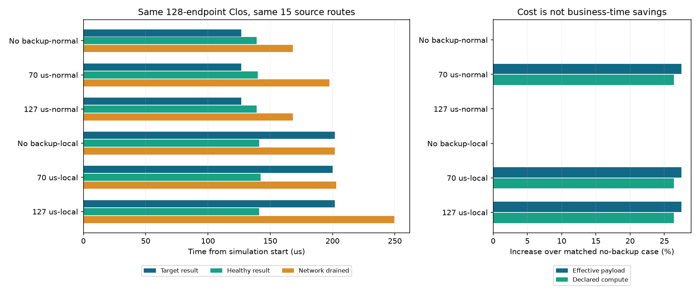
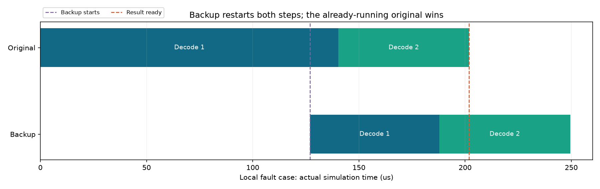

2026-10-30 · 128模拟端点Clos · 正常样本校准 · 两个新增网络，各执行一次
先校准备用门槛，再谈优化收益
把备用从70微秒改为正常样本校准的127微秒后，正常误触发消失；本次局部故障中，完整备用没有缩短目标等待，却增加通信与收尾时间。这是成熟机制的基线检查，没有证明新算法收益。
这次只改变什么
原来正常的两步目标就需要126.626微秒，70微秒启动备用过早。本轮只读取这份正常样本，按1微秒向上取整，固定为127微秒，留374纳秒余量，再执行正常与故障对照。规则在新执行前提交，未扫描门槛或依据故障结果改参。故障旧结果此前已知，不能称盲测或独立留出集。
正常normal不额外注入故障；local仅在前20微秒丢弃到达GPU28的DATA，控制包保留，实际仍丢6包。两者均使用选择性重传及参考DCQCN。control/treatment是策略，normal/local是网络条件。
只有一个确定性正常样本，127微秒不是p99或生产最优门槛，374纳秒余量不代表实际部署稳健性。取整是实验规则，不是创新，也不是硬件时钟精度。
收益和代价放在一起看

校准后的正常条件与control的完整逐包和原始队列记录完全相同；备用未开始，目标、健康和网络收尾时间也完全相同。已预留的备用KV仍真实保留到跳过时释放，不能称零备用内存成本。
局部故障下目标收益为0.000微秒，健康完成不变；总有效载荷增加3,088,448字节（27.51%），声明计算增加26.37%，网络排空晚47.644微秒。本报告三种局部故障策略各实际丢6包，重传43,392字节。有效载荷与重传分列，不能把已有重传当新策略工作。
旧70微秒条件只读复用：局部目标少等1.820微秒，但正常也启动、健康受拖累。校准后未保留这点目标收益，因此不能以旧门槛的结果证明新恢复机制有效。
为什么备用追不上

备用127微秒开始。事后记录显示，原任务还需74.866微秒完成；备用从头做两步，实际用了122.510微秒，直到249.510微秒才结束。原任务先交付结果，已开始的输家继续执行、确认和清理，不能直接删掉尾部流量。原任务8个阶段的释放时刻均与control一致。
这是实际竞争结果的回溯解释。原任务剩余时间、未来ACK和排队路径均不进入在线策略；这些数据不能冒充策略在127微秒已知的信息，也不证明所有更晚门槛或其他负载都无效。
有包级干扰，为什么健康任务没有变慢
4,264次健康DATA包的交换机经过全部配对，无缺失。5处驻留发生变化，总变化仅410纳秒，其中包含一处减少37纳秒。这个累计包指标不能直接当作业务时延。
另外3条健康消息的数据接收时刻没有改变，但源端ACK晚到。按实际ACK包的发送、逐跳接收与转发记录核对，延迟分别全部来自ACK路径驻留增加，ACK起点发送时刻相同：
这些确认原本就不是决定阶段结束的最晚依赖，延迟没有耗尽余量。各rank局部到达时刻有变化，健康任务全部8个阶段的释放时刻及最终完成时间仍相同。因此“网络中有排队”不能直接推出“能优化同等数量的推理等待”。
下一步怎样决定做什么
本轮排除了“只把完整备用门槛调好，就能在该短故障片段中显著获益”的乐观预期。当前对照下，直接依靠既有选择性重传即可得到相同目标和健康完成时间，同时省去整份额外备用工作；不能把这个选择包装成新算法。
继续研究前，应先用已有记录评估在线可见进度能否识别无效重执行，并与简单固定延迟、资源限额、进度感知等已有方法比较；如果只是修正规则或已完成阶段信息就能解释收益，应照实报告。若转向较小恢复单位，须先有真实通信消费/一次归并/迟到隔离的接口依据，不能绕过原collective门限制造加速。新请求持续到达、代表性故障分布和GPU校准仍是待补项。
系统、来源和证据边界
本轮使用已实现的多步完整备用平台，没有新增后端算法、编译或依赖改动。两次公开rdma-run均成功；旧四份网络逐文件SHA保持，独立核对原件路由矩阵、计算、门限、包、ACK、原生定时/决策与KV。首次离线解释脚本把“阶段释放相同”误写成“每rank到达也相同”而失败，已修正为保留实际到达、核对最大释放时刻；原失败日志保留，未重跑网络。
15份原件中4份有固定远端修订，新增11份仅目录用户确认及本机SHA，远端内容版本未知。128端点、四组EP32、每rank每层8专家；只使用原层3/4、两个Decode入口。专家选择是真实数据，消息是前端投影和ns-3模拟包，计算、BF16布局与现成专家/KV副本均为声明，不能称完整671B实测、满载128卡、p99、吞吐或经济收益。
两幅科学图使用已有Matplotlib生成并另存SVG/PNG；网页无外部脚本，可本地打开。浏览器渲染状态与资源、哈希核查见最终验收。